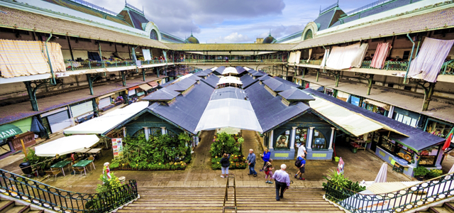

Monumentos
Nesta página iremos apresentar um roteiro para quem deseja conhecer, em apenas um dia, algumas das principais atrações do Porto. A oferta vai desde locais de entrada gratuita até locais com um preço bastante justo.
Torre dos Clérgios
Localiza-se no topo da Rua dos Clérigos. Integra três elementos principais: a Igreja dos Clérigos, a Torre dos Clérigos e a Casa da Irmandade, que liga a igreja e a torre e em tempos acolheu os outros serviços da Irmandade dos Clérigos. Projetado pelo arquiteto Nicolau Nasoni, este conjunto é um dos mais notáveis exemplos do estilo tardo-barroco em território português.
Estação de S.Bento
Situada na Praça de Almeida Garrett, no Centro Histórico do Porto, a estação é célebre pelos seus painéis de azulejo. O edifício, de influência francesa, é obra do arquitecto portuense José Marques da Silva. Entrou ao serviço no dia 8 de Novembro de 1896, só tendo sido oficialmente inaugurada em 5 de Outubro de 1916.
Jardins do Palácio de Cristal
Estes jardins românticos foram projectados na década de 1860 pelo paisagista alemão Émile David, para envolver o então Palácio de Cristal, substituído pelo Pavilhão Rosa Mota na década de 1950. Incluem o chamado Jardim Emílio David que possui belos exemplares de rododendros, camélias, araucárias, ginkgos, para além de fontes e estátuas alegóricas às estações do ano.

Mercado do Bolhão
A sua construção caracteriza-se pela sua monumentalidade, própria da arquitectura neoclássica. Os vendedores no mercado distribuem-se por dois pisos. O Mercado do Bolhão é vocacionado sobretudo para produtos frescos, sobretudo alimentares. Os vendedores no mercado distribuem-se por dois pisos e diferentes secções especializadas, desde: zona de peixarias, talhos, hortícolas e florais...